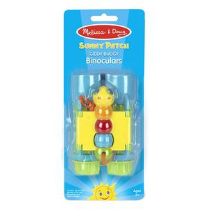

Available
Giddy Buggy Binoculars
Developmental Play
R185Child-friendly binoculars with a cute bug theme 4x25 adjustable field glasses Bright and sturdy design Encourages observation skills and interest in the natural world 3+ years Product: 11.4cm x 5cm x 6.3cm Package: 23.6cm (H) x 9.9cm (W) x 5.8cm (L) Weight: 0.1kg
Enquire about this product

Giddy Buggy Binoculars at Kids Corner KZN
Giddy Buggy Binoculars is part of our Developmental Play collection. Kids Corner KZN stocks toys for learning, pretend play, creative play, gifting and everyday childhood discovery in South Africa.
Browse more Developmental Play toys